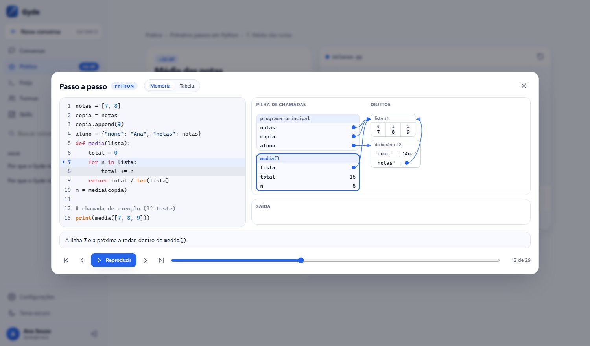

Veja a memória do seu programa
O Passo a passo roda o código linha por linha e desenha a memória: cada chamada de função empilhada, as listas e os dicionários como caixas, e setas mostrando quando duas variáveis apontam para o mesmo objeto.
